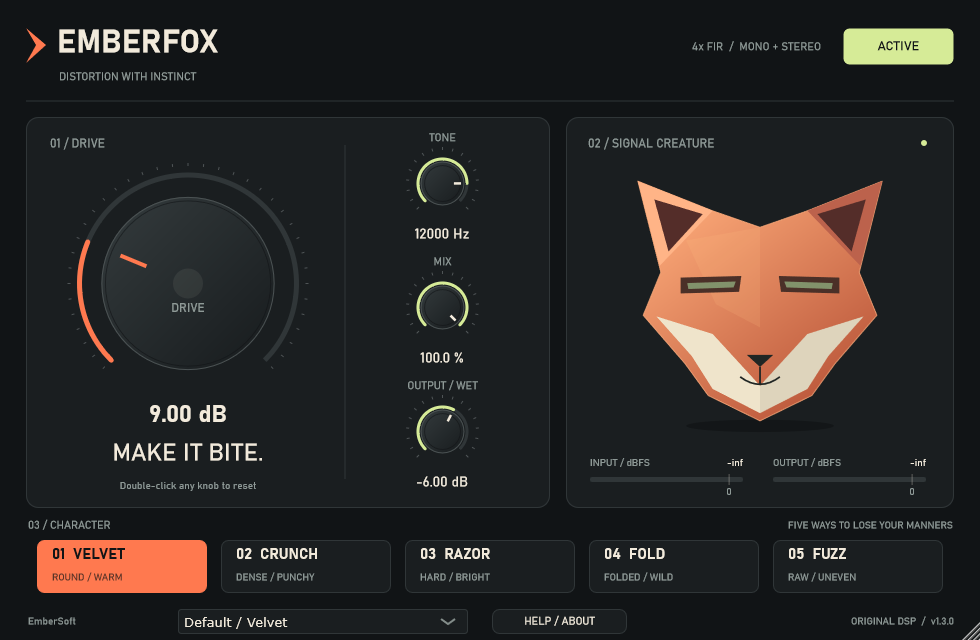

EmberSoft · Windows x64 · Version 1.3.0EMBERFOX
Five distortion characters. One immediate workflow.
Check the accompanying release-status.json for signing status. Installers ending in -unsigned.exe are unsigned previews with no trusted publisher signature. Clean-Windows verification remains pending for this preview. Obtain the download from a distribution channel you trust.

Install and update
- Close your DAW and standalone application. Back up projects before testing an update.
- Run Setup. Choose installation for yourself or all users, the application folder, and the VST3 folder scanned by your DAW. The standalone is optional. Offline documentation and corresponding source are included.
- Setup checks the x64 Visual C++ runtime. It runs the bundled Microsoft-signed prerequisite only if a suitable version is absent. Administrator approval may be required; Setup stops if the prerequisite cannot be installed.
- Rescan VST3 plugins in the DAW and load EMBERFOX as an audio effect.
Standard VST3 locations: all users C:\Program Files\Common Files\VST3; current user %LOCALAPPDATA%\Programs\Common\VST3. Some hosts need the current-user path added manually. For ZIP installation, copy the complete EMBERFOX.vst3 folder, including Contents.
Updates use the same installer identity and preserve DAW sound/state identifiers. Uninstall through Windows Installed Apps or the installed uninstaller. It removes owned application/plugin files, leaves user-created files and shared Microsoft runtimes, and does not remove DAW projects. For rollback, close the host and restore the entire older VST3 bundle from its retained release ZIP; keep a project backup.
Controls
| Control | Behavior |
|---|
| Drive | 0–36 dB boost before distortion. Higher input levels also distort more. |
| Tone | 400 Hz–20 kHz low-pass after distortion, capped below Nyquist. Lower values soften brightness. |
| Mix | 0–100% processed audio blended with latency-aligned dry. |
| Output / Wet | −24 to +6 dB on the wet signal only. At zero Mix it does not affect dry audio. |
| Active / Bypassed | Crossfades to latency-aligned dry. Metering remains active. |
Click a value to type; Enter commits and Escape cancels. Double-click a knob to reset. All six parameters support host automation and complete DAW project save/restore. There is no output limiter or automatic level matching.
Five characters
| Mode | Sound |
|---|
| Velvet | Smooth saturation gradually rounds peaks. |
| Crunch | Cubic soft clipping adds dense, firm distortion. |
| Razor | Hard clipping sharply limits waveform peaks. |
| Fold | Wavefolding bends the waveform back on itself for complex textures. |
| Fuzz | Biased asymmetric saturation produces a gritty character; DC filtering removes steady offset. |
All modes use 4x FIR oversampling. The fixed 61-sample latency is reported to the host and applied to dry/bypass paths. Wet filtering changes phase as well as timbre.
Factory starting points
The footer menu contains Default/Velvet, Velvet/Warmth, Crunch/Punch, Razor/Edge, Fold/Motion, Fuzz/Growl, Crunch/Parallel Bite and Fuzz/Dark Heat. Loading one changes the existing parameters and activates the effect. Editing a setting shows Custom; your DAW project still saves the full sound. Default/Velvet restores the original 9 dB Drive, 12 kHz Tone, 100% Mix and −6 dB Output settings. Examples are not loudness matched.
Meters and animation
Peak-envelope bars span −60 to +6 dBFS. The fixed 0 tick marks digital full scale. Peak markers hold about one second, then fall smoothly; orange indicates levels above zero. Input drives the fox's expression/movement, output independently drives its eye light/halo. All feature shapes remain mirrored, and mouths stay closed with no teeth. The established facet shading gives depth.
Troubleshooting and support
For scanning problems, check the complete bundle, scan path and host rescan/blocklist. For standalone audio, select the input/output device in its audio settings. See system requirements, the diagnostic checklist and the changelog. In-plugin HELP/ABOUT works offline.
EmberSoft has no public support email or website for this release. Record version, host, Windows version, sample rate, block size and reproduction steps; share only non-private examples through GitHub issues.
Source and license
Original code and artwork: AGPL-3.0-only. The complete corresponding source and pinned JUCE source accompany this download. LICENSE.txt and THIRD_PARTY.md describe the terms and dependency notices. The plugin needs no activation and performs no telemetry or network access.
Windows x64 only. Automated host/editor and validator results do not establish compatibility with every DAW or replace a live listening session. No exact sonic match to another product is claimed.